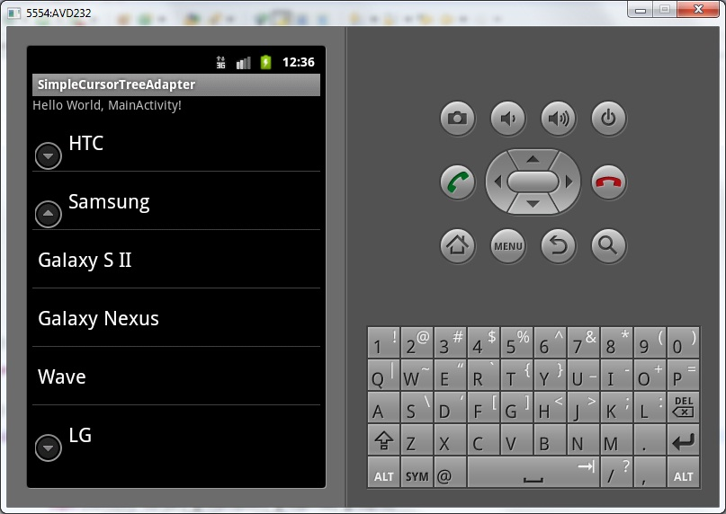

В этом уроке:
- используем SimpleCursorTreeAdapter для построения списка
SimpleCursorTreeAdapter не является полноценным готовым адаптером. Это абстрактный класс, он требует реализацию метода Cursor getChildrenCursor (Cursor groupCursor).
Что это за метод и чего в нем нужно написать, чтобы все заработало? Чтобы понять это, надо разобраться в алгоритме работы этого адаптера, давайте рассмотрим один из конструкторов: SimpleCursorTreeAdapter (Context context, Cursor cursor, int groupLayout, String[] groupFrom, int[] groupTo, int childLayout, String[] childFrom, int[] childTo).
Мы указываем в конструкторе cursor – это курсор групп. В нем содержатся данные по группам, необходимые вам для вывода данных в список. Т.е. все как при использовании SimpleCursorAdapter (см. предыдущие уроки). И адаптер спокойно отображает свернутые группы, используя данные из этого курсора. При сопоставлении полей курсора и View-компонентов он использует массивы groupFrom[] и groupTo[].
Но если мы захотим группу развернуть и посмотреть элементы, то адаптеру неоткуда взять данные по элементам. Курсор cursor содержит данные только по группам. В этом случае адаптер ставит в cursor позицию, соответствующую раскрываемой группе, вызывает метод getChildrenCursor, передает ему этот курсор групп и ожидает в ответ курсор элементов этой группы.
Мы в реализации этого метода получаем id текущей раскрываемой группы из курсора групп, делаем по нему запрос в БД и получаем в виде курсора данные по элементам группы. Этот курсор элементов мы возвращаем, как результат метода getChildrenCursor и адаптер использует его, чтобы создать элементы группы. При сопоставлении полей курсора и View-компонентов используются массивы childFrom и childTo.
Ну и поглядим, что там еще осталось в конструкторе:
context – контекст
groupLayout – layout-ресурс для отображения группы
childLayout - layout-ресурс для отображения элемента
В целом все несложно, рассмотрим на примере. Сделаем список из компаний (групп) и их смартфонов (элементов).
Создадим проект:
Project name: P0531_SimpleCursorTreeAdapter
Build Target: Android 4.0
Application name: SimpleCursorTreeAdapter
Package name: ru.startandroid.develop.p0531simplecursortreeadapter
Create Activity: MainActivity
Экран main.xml:
<?xml version="1.0" encoding="utf-8"?>
<LinearLayout
xmlns:android="http://schemas.android.com/apk/res/android"
android:layout_width="fill_parent"
android:layout_height="fill_parent"
android:orientation="vertical">
<ExpandableListView
android:id="@+id/elvMain"
android:layout_width="match_parent"
android:layout_height="wrap_content">
</ExpandableListView>
</LinearLayout>Т.к. нам нужна будет БД, выделим под работу с ней отдельный класс
DB.java:
package ru.startandroid.develop.p0531simplecursortreeadapter;
import android.content.ContentValues;
import android.content.Context;
import android.database.Cursor;
import android.database.sqlite.SQLiteDatabase;
import android.database.sqlite.SQLiteDatabase.CursorFactory;
import android.database.sqlite.SQLiteOpenHelper;
public class DB {
private static final String DB_NAME = "mydb";
private static final int DB_VERSION = 1;
// имя таблицы компаний, поля и запрос создания
private static final String COMPANY_TABLE = "company";
public static final String COMPANY_COLUMN_ID = "_id";
public static final String COMPANY_COLUMN_NAME = "name";
private static final String COMPANY_TABLE_CREATE = "create table "
+ COMPANY_TABLE + "(" + COMPANY_COLUMN_ID
+ " integer primary key, " + COMPANY_COLUMN_NAME + " text" + ");";
// имя таблицы телефонов, поля и запрос создания
private static final String PHONE_TABLE = "phone";
public static final String PHONE_COLUMN_ID = "_id";
public static final String PHONE_COLUMN_NAME = "name";
public static final String PHONE_COLUMN_COMPANY = "company";
private static final String PHONE_TABLE_CREATE = "create table "
+ PHONE_TABLE + "(" + PHONE_COLUMN_ID
+ " integer primary key autoincrement, " + PHONE_COLUMN_NAME
+ " text, " + PHONE_COLUMN_COMPANY + " integer" + ");";
private final Context mCtx;
private DBHelper mDBHelper;
private SQLiteDatabase mDB;
public DB(Context ctx) {
mCtx = ctx;
}
// открываем подключение
public void open() {
mDBHelper = new DBHelper(mCtx, DB_NAME, null, DB_VERSION);
mDB = mDBHelper.getWritableDatabase();
}
// закрываем подключение
public void close() {
if (mDBHelper != null)
mDBHelper.close();
}
// данные по компаниям
public Cursor getCompanyData() {
return mDB.query(COMPANY_TABLE, null, null, null, null, null, null);
}
// данные по телефонам конкретной группы
public Cursor getPhoneData(long companyID) {
return mDB.query(PHONE_TABLE, null, PHONE_COLUMN_COMPANY + " = "
+ companyID, null, null, null, null);
}
private class DBHelper extends SQLiteOpenHelper {
public DBHelper(Context context, String name, CursorFactory factory,
int version) {
super(context, name, factory, version);
}
@Override
public void onCreate(SQLiteDatabase db) {
ContentValues cv = new ContentValues();
// названия компаний (групп)
String[] companies = new String[] { "HTC", "Samsung", "LG" };
// создаем и заполняем таблицу компаний
db.execSQL(COMPANY_TABLE_CREATE);
for (int i = 0; i < companies.length; i++) {
cv.put(COMPANY_COLUMN_ID, i + 1);
cv.put(COMPANY_COLUMN_NAME, companies[i]);
db.insert(COMPANY_TABLE, null, cv);
}
// названия телефонов (элементов)
String[] phonesHTC = new String[] { "Sensation", "Desire",
"Wildfire", "Hero" };
String[] phonesSams = new String[] { "Galaxy S II", "Galaxy Nexus",
"Wave" };
String[] phonesLG = new String[] { "Optimus", "Optimus Link",
"Optimus Black", "Optimus One" };
// создаем и заполняем таблицу телефонов
db.execSQL(PHONE_TABLE_CREATE);
cv.clear();
for (int i = 0; i < phonesHTC.length; i++) {
cv.put(PHONE_COLUMN_COMPANY, 1);
cv.put(PHONE_COLUMN_NAME, phonesHTC[i]);
db.insert(PHONE_TABLE, null, cv);
}
for (int i = 0; i < phonesSams.length; i++) {
cv.put(PHONE_COLUMN_COMPANY, 2);
cv.put(PHONE_COLUMN_NAME, phonesSams[i]);
db.insert(PHONE_TABLE, null, cv);
}
for (int i = 0; i < phonesLG.length; i++) {
cv.put(PHONE_COLUMN_COMPANY, 3);
cv.put(PHONE_COLUMN_NAME, phonesLG[i]);
db.insert(PHONE_TABLE, null, cv);
}
}
@Override
public void onUpgrade(SQLiteDatabase db, int oldVersion, int newVersion) {
}
}
}Мы создаем две таблицы: company (компании) и phone (телефоны). В таблице телефонов мы указываем для каждого телефона id его группы из таблицы компаний. Также создаем методы для открытия и закрытия подключения, и методы для получения данных по группе и по элементам конкретной группы.
Код MainActivity.java:
package ru.startandroid.develop.p0531simplecursortreeadapter;
import android.app.Activity;
import android.content.Context;
import android.database.Cursor;
import android.os.Bundle;
import android.widget.ExpandableListView;
import android.widget.SimpleCursorTreeAdapter;
public class MainActivity extends Activity {
ExpandableListView elvMain;
DB db;
/** Called when the activity is first created. */
public void onCreate(Bundle savedInstanceState) {
super.onCreate(savedInstanceState);
setContentView(R.layout.main);
// подключаемся к БД
db = new DB(this);
db.open();
// готовим данные по группам для адаптера
Cursor cursor = db.getCompanyData();
startManagingCursor(cursor);
// сопоставление данных и View для групп
String[] groupFrom = { DB.COMPANY_COLUMN_NAME };
int[] groupTo = { android.R.id.text1 };
// сопоставление данных и View для элементов
String[] childFrom = { DB.PHONE_COLUMN_NAME };
int[] childTo = { android.R.id.text1 };
// создаем адаптер и настраиваем список
SimpleCursorTreeAdapter sctAdapter = new MyAdapter(this, cursor,
android.R.layout.simple_expandable_list_item_1, groupFrom,
groupTo, android.R.layout.simple_list_item_1, childFrom,
childTo);
elvMain = (ExpandableListView) findViewById(R.id.elvMain);
elvMain.setAdapter(sctAdapter);
}
protected void onDestroy() {
super.onDestroy();
db.close();
}
class MyAdapter extends SimpleCursorTreeAdapter {
public MyAdapter(Context context, Cursor cursor, int groupLayout,
String[] groupFrom, int[] groupTo, int childLayout,
String[] childFrom, int[] childTo) {
super(context, cursor, groupLayout, groupFrom, groupTo,
childLayout, childFrom, childTo);
}
protected Cursor getChildrenCursor(Cursor groupCursor) {
// получаем курсор по элементам для конкретной группы
int idColumn = groupCursor.getColumnIndex(DB.COMPANY_COLUMN_ID);
return db.getPhoneData(groupCursor.getInt(idColumn));
}
}
} В onCreate мы подключаемся к БД, создаем адаптер и список.
В onDestroy закрываем подключение.
Класс MyAdapter – реализация абстрактного SimpleCursorTreeAdapter. Конструктор используем по умолчанию. В методе getChildrenCursor мы получаем id текущей группы и по нему получаем курсор с данными об элементах группы.
Все сохраняем, запускаем.

Список-дерево работает.
Если вы повесите для списка обработчики нажатий на группы и элементы, они будут предоставлять вам не только позицию пункта в списке, но и соответствующее значение _id из БД.
Сопоставление данных и View-компонентов происходит так же, как и для SimpleCursorAdapter. Если есть внешний ViewBinder, вызывается его метод setViewValue. Если нет, то идет стандартная обработка для TextView и ImageView. Подробности биндинга можно найти в прошлых уроках.